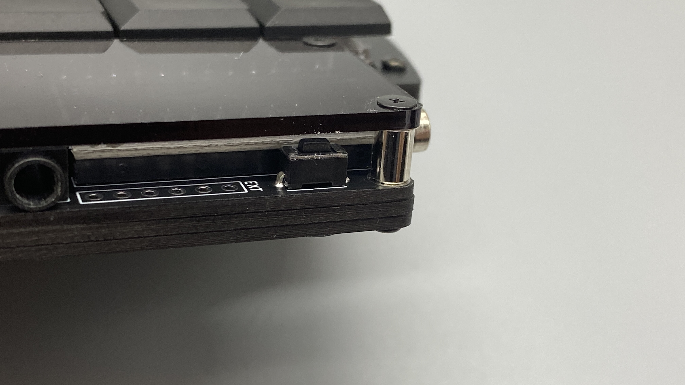
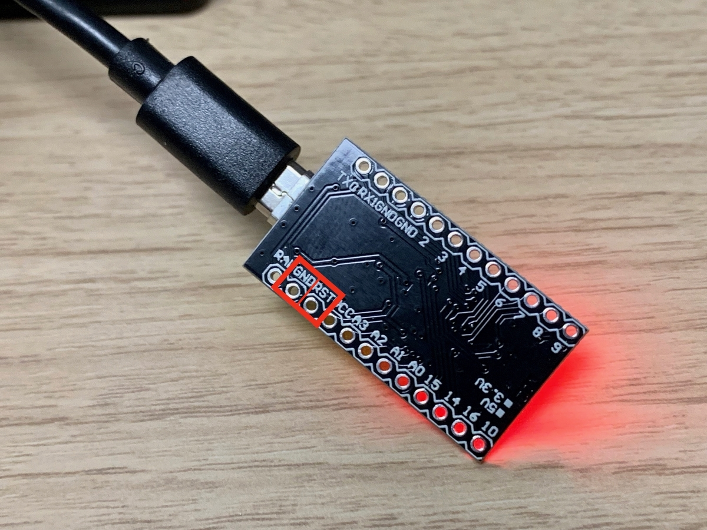

自分でファームウェアを作る
環境構築
- QMK公式ドキュメントを参照して書き込み環境を構築してください
リポジトリ
- プルリクエスト中なので、下記のブランチから取得してください
キーマップの修正
- 下記のディレクトリをコピーして、自分用のkeymapのフォルダを作成して修正してください
- keyboards/wings42/keymaps/default/
- keyboards/wings42/keymaps/mykeymapなどとする
- （mykeymapの部分はなんでもいいです。自分はyfukuとしてます。）
書き込み
ビルド
- コマンド実行
make wings42:mykeymap
書き込み
- コマンド実行
make wings42:mykeymap:avrdude
- 下記のように、"…“と出てきたら、
Checking file size of wings42_rev1_default.hex [OK]
* The firmware size is fine - 20168/28672 (8504 bytes free)
Detecting USB port, reset your controller now....
-
キーボードのリセットボタンを押します
 -
ProMicro単体の場合は、画像のGNDとRSTと書かれている下の丸同士をピンセットなどでショートさせてください。 
-
下記のように表示され、最後に
avrdude done. Thank you.が表示されれば成功です！
Device /dev/tty.usbmodem146201 has appeared; assuming it is the controller.
Waiting for /dev/tty.usbmodem146201 to become writable.
Connecting to programmer: .
Found programmer: Id = "CATERIN"; type = S
Software Version = 1.0; No Hardware Version given.
Programmer supports auto addr increment.
Programmer supports buffered memory access with buffersize=128 bytes.
Programmer supports the following devices:
Device code: 0x44
avrdude: AVR device initialized and ready to accept instructions
Reading | ################################################## | 100% 0.00s
avrdude: Device signature = 0x1e9587 (probably m32u4)
avrdude: NOTE: "flash" memory has been specified, an erase cycle will be performed
To disable this feature, specify the -D option.
avrdude: erasing chip
avrdude: reading input file ".build/wings42_rev1_default.hex"
avrdude: input file .build/wings42_rev1_default.hex auto detected as Intel Hex
avrdude: writing flash (20168 bytes):
Writing | ################################################## | 100% 1.54s
avrdude: 20168 bytes of flash written
avrdude: verifying flash memory against .build/wings42_rev1_default.hex:
avrdude: load data flash data from input file .build/wings42_rev1_default.hex:
avrdude: input file .build/wings42_rev1_default.hex auto detected as Intel Hex
avrdude: input file .build/wings42_rev1_default.hex contains 20168 bytes
avrdude: reading on-chip flash data:
Reading | ################################################## | 100% 0.18s
avrdude: verifying ...
avrdude: 20168 bytes of flash verified
avrdude: safemode: Fuses OK (E:FB, H:D8, L:FF)
avrdude done. Thank you.
Last modified January 1, 0001